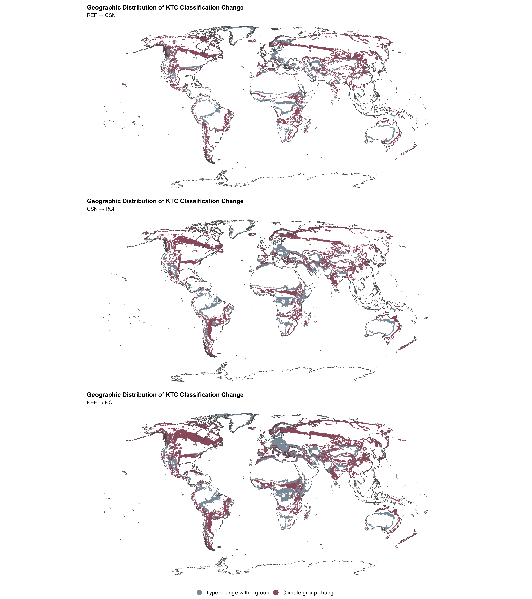
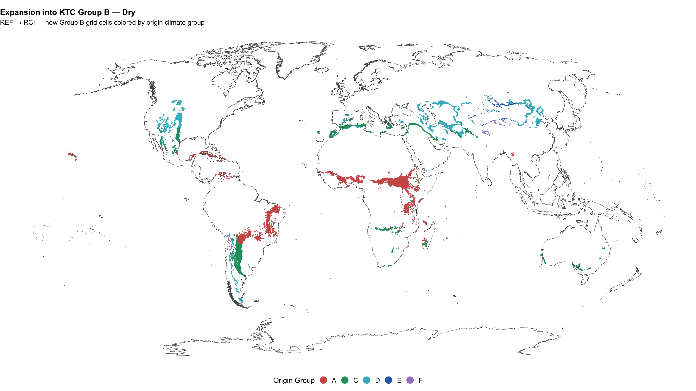
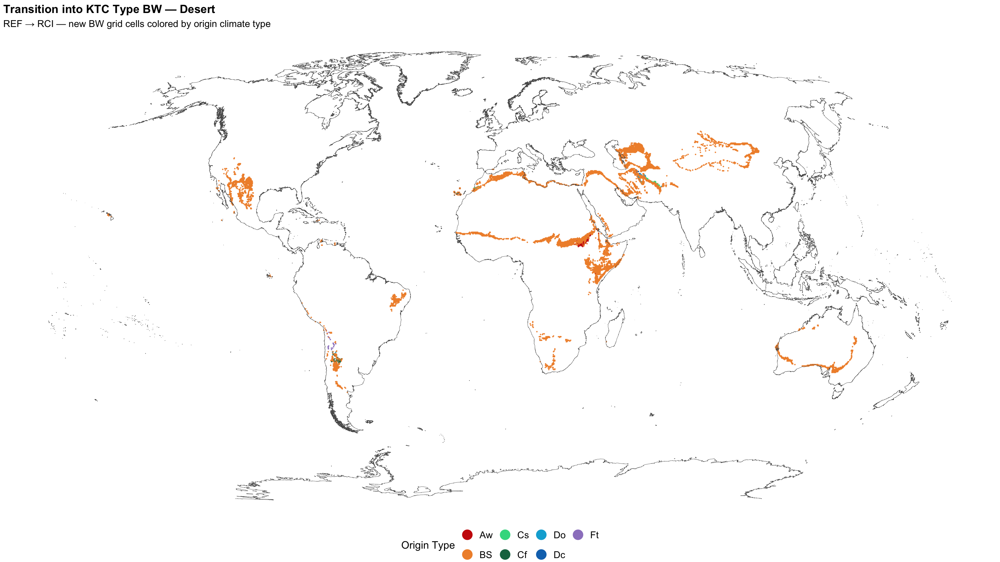
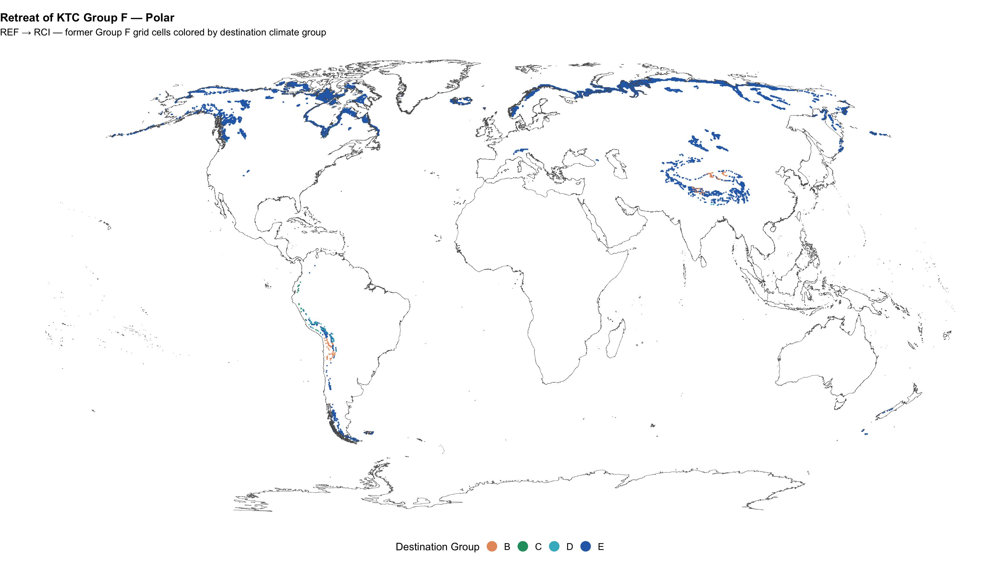
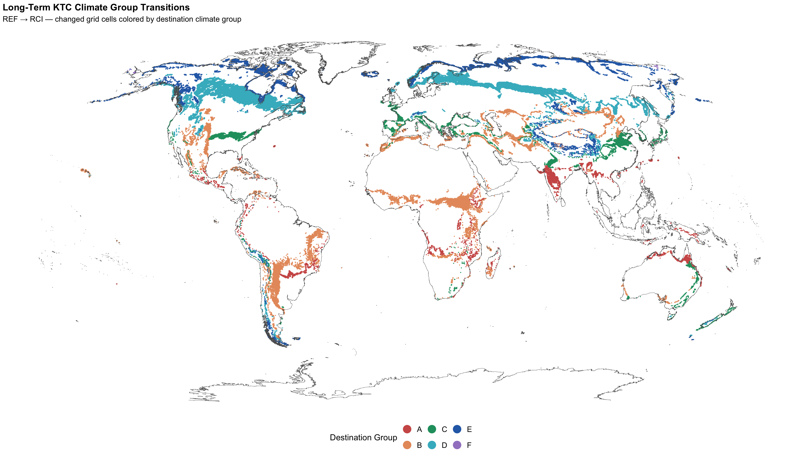

Show code
suppressPackageStartupMessages({
library(tidyverse)
library(sf)
library(gt)
library(arrow)
library(fs)
library(patchwork)
})Objective: Map the geographic distribution of Köppen–Trewartha climate-classification transitions among the REF, CSN, and RCI climate intervals. This notebook shows where climate types changed, distinguishes within-group type changes from broader climate-group changes, examines the expansion of dry and desert climate classifications and the retreat of polar classifications, and provides a long-term spatial summary of change from REF to RCI.
The transition-analysis notebook quantified how much land changed classification and identified the most important transitions. This final stage adds the geographic dimension: where did those changes occur?
suppressPackageStartupMessages({
library(tidyverse)
library(sf)
library(gt)
library(arrow)
library(fs)
library(patchwork)
})dir_reference <- path("data", "reference")
dir_derived <- path("data", "derived")
transitions_path <- path(
dir_derived,
"climate_transitions.parquet"
)
group_codes_path <- path(
dir_reference,
"ktc_group_codes.csv"
)
type_codes_path <- path(
dir_reference,
"ktc_type_codes.csv"
)
coastline_path <- path(
dir_reference,
"global-coastline.gpkg"
)source("R/climate-periods.R")
climate_periods |>
transmute(
`Period` = period_name,
`Short Label` = period_label,
`Abbreviation` = period_abbr,
`Years` = sprintf("%d–%d", start_year, end_year)
) |>
gt()| Period | Short Label | Abbreviation | Years |
|---|---|---|---|
| WMO Climatological Reference Period | Reference Period | REF | 1961–1990 |
| WMO Climatological Standard Normals | Standard Normal | CSN | 1991–2020 |
| Recent Climate Interval | Recent Interval | RCI | 2021–2025 |
transition_comparisons <- tribble(
~comparison_id, ~comparison_label, ~from_period_id, ~to_period_id,
"ref_csn", "REF → CSN", "reference_period", "standard_normal",
"csn_rci", "CSN → RCI", "standard_normal", "recent_interval",
"ref_rci", "REF → RCI", "reference_period", "recent_interval"
)
comparison_levels <- transition_comparisons$comparison_labelrequired_reference_files <- c(
group_codes_path,
type_codes_path,
coastline_path
)
if (!all(file_exists(required_reference_files))) {
stop(
"Missing transition-mapping reference files in data/reference. ",
"Run 01-data-acquisition.qmd first."
)
}
group_codes <- read_csv(
group_codes_path,
show_col_types = FALSE
)
type_codes <- read_csv(
type_codes_path,
show_col_types = FALSE
)
group_levels <- group_codes$ktc
type_levels <- type_codes$ktc
group_palette <- setNames(
group_codes$hex,
group_codes$ktc
)
type_palette <- setNames(
type_codes$hex,
type_codes$ktc
)
sf_coastline <- st_read(
coastline_path,
quiet = TRUE
)
rbn_prj <- "ESRI:54030"
change_palette <- c(
"Type change within group" = "#8C9AA6",
"Climate group change" = "#9B5E6E"
)fn_transition_points <- function(df) {
st_as_sf(
df,
coords = c(
"lon",
"lat"
),
crs = 4326,
remove = FALSE
)
}
fn_comparison_subtitle <- function(comparison_id) {
comparison_row <- transition_comparisons |>
filter(
.data$comparison_id ==
.env$comparison_id
)
if (nrow(comparison_row) != 1) {
stop(
"Expected exactly one transition comparison for ",
comparison_id,
"."
)
}
comparison_row$comparison_label[[1]]
}
fn_build_overall_change_map <- function(
transitions_df,
comparison_id
) {
plot_df <- transitions_df |>
filter(
.data$comparison_id ==
.env$comparison_id,
type_changed
) |>
mutate(
change_level = if_else(
group_changed,
"Climate group change",
"Type change within group"
),
change_level = factor(
change_level,
levels = c(
"Type change within group",
"Climate group change"
)
)
) |>
fn_transition_points()
ggplot() +
geom_sf(
data = plot_df,
aes(
color = change_level
),
size = 0.08,
alpha = 0.85
) +
geom_sf(
data = sf_coastline,
color = "grey35",
linewidth = 0.15
) +
scale_color_manual(
values = change_palette,
drop = FALSE
) +
guides(
color = guide_legend(
override.aes = list(
size = 5,
alpha = 1
)
)
) +
coord_sf(
crs = rbn_prj,
datum = NA
) +
labs(
title = "Geographic Distribution of KTC Classification Change",
subtitle = fn_comparison_subtitle(
comparison_id
),
color = NULL
) +
theme_void() +
theme(
plot.title = element_text(
face = "bold"
),
legend.position = "bottom",
legend.text = element_text(
size = 12
)
)
}
fn_build_themed_transition_map <- function(
transitions_df,
comparison_id,
filter_expression,
color_variable,
color_levels,
palette,
title,
subtitle,
legend_title
) {
plot_df <- transitions_df |>
filter(
.data$comparison_id ==
.env$comparison_id
) |>
filter(
{{ filter_expression }}
) |>
mutate(
map_class = factor(
.data[[color_variable]],
levels = color_levels
)
) |>
fn_transition_points()
ggplot() +
geom_sf(
data = plot_df,
aes(
color = map_class
),
size = 0.12,
alpha = 0.9
) +
geom_sf(
data = sf_coastline,
color = "grey35",
linewidth = 0.15
) +
scale_color_manual(
values = palette,
drop = TRUE
) +
guides(
color = guide_legend(
override.aes = list(
size = 5,
alpha = 1
)
)
) +
coord_sf(
crs = rbn_prj,
datum = NA
) +
labs(
title = title,
subtitle = paste(
fn_comparison_subtitle(
comparison_id
),
"—",
subtitle
),
color = legend_title
) +
theme_void() +
theme(
plot.title = element_text(
face = "bold"
),
legend.position = "bottom",
legend.title = element_text(
size = 12
),
legend.text = element_text(
size = 11
)
)
}
fn_build_long_term_group_map <- function(
transitions_df
) {
plot_df <- transitions_df |>
filter(
comparison_id == "ref_rci",
group_changed
) |>
mutate(
destination_group = factor(
to_grp,
levels = group_levels
)
) |>
fn_transition_points()
ggplot() +
geom_sf(
data = plot_df,
aes(
color = destination_group
),
size = 0.09,
alpha = 0.9
) +
geom_sf(
data = sf_coastline,
color = "grey35",
linewidth = 0.15
) +
scale_color_manual(
values = group_palette,
breaks = group_levels,
drop = FALSE
) +
guides(
color = guide_legend(
override.aes = list(
size = 5,
alpha = 1
)
)
) +
coord_sf(
crs = rbn_prj,
datum = NA
) +
labs(
title = "Long-Term KTC Climate Group Transitions",
subtitle = "REF → RCI — changed grid cells colored by destination climate group",
color = "Destination Group"
) +
theme_void() +
theme(
plot.title = element_text(
face = "bold"
),
legend.position = "bottom",
legend.title = element_text(
size = 12
),
legend.text = element_text(
size = 11
)
)
}if (!file_exists(transitions_path)) {
stop(
"The transition dataset does not exist. ",
"Run 05-transition-analysis.qmd first."
)
}
transition_results <- read_parquet(
transitions_path
)These maps show only grid cells whose KTC type changed. Cells that remained within the same broad climate group are distinguished from cells that crossed a climate-group boundary. Unchanged land is omitted so that the spatial pattern of change is not overwhelmed by the much larger stable classification area.
overall_ref_csn <- fn_build_overall_change_map(
transition_results,
"ref_csn"
)
overall_csn_rci <- fn_build_overall_change_map(
transition_results,
"csn_rci"
)
overall_ref_rci <- fn_build_overall_change_map(
transition_results,
"ref_rci"
)
overall_ref_csn /
overall_csn_rci /
overall_ref_rci +
plot_layout(
guides = "collect"
) &
theme(
legend.position = "bottom"
)
The following maps focus on long-term REF → RCI transitions into increasingly dry Köppen–Trewartha classifications. These maps describe climate-classification change, not land degradation or desertification.
This map shows grid cells that were not classified as Group B during REF but are classified as Group B during RCI. Changed cells are colored by their origin climate group, showing both where dry climates expanded and which broad climate classifications they replaced.
fn_build_themed_transition_map(
transitions_df = transition_results,
comparison_id = "ref_rci",
filter_expression =
from_grp != "B" &
to_grp == "B",
color_variable = "from_grp",
color_levels = group_levels,
palette = group_palette,
title = "Expansion into KTC Group B — Dry",
subtitle = "new Group B grid cells colored by origin climate group",
legend_title = "Origin Group"
)
This map isolates the more specific transition into the KTC BW — Desert (Arid) climate type. Changed cells are colored by their origin climate type, allowing the locations and prior classifications of newly classified desert climates to be examined directly.
fn_build_themed_transition_map(
transitions_df = transition_results,
comparison_id = "ref_rci",
filter_expression =
from_ktc != "BW" &
to_ktc == "BW",
color_variable = "from_ktc",
color_levels = type_levels,
palette = type_palette,
title = "Transition into KTC Type BW — Desert",
subtitle = "new BW grid cells colored by origin climate type",
legend_title = "Origin Type"
)
This map shows grid cells classified as Group F — Polar during REF that are assigned to a different climate group during RCI. Changed cells are colored by their destination climate group, showing where polar classifications retreated and which broad climates replaced them.
fn_build_themed_transition_map(
transitions_df = transition_results,
comparison_id = "ref_rci",
filter_expression =
from_grp == "F" &
to_grp != "F",
color_variable = "to_grp",
color_levels = group_levels,
palette = group_palette,
title = "Retreat of KTC Group F — Polar",
subtitle = "former Group F grid cells colored by destination climate group",
legend_title = "Destination Group"
)
The final map emphasizes the broadest project comparison, REF → RCI. It shows only grid cells that changed KTC climate group, with each changed cell colored by its destination group. Stable land is omitted so that the spatial structure of long-term classification change remains visible.
fn_build_long_term_group_map(
transition_results
)